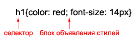
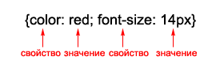

CSS - Cascading Styles Sheets (каскадные таблицы стилей). В них хранится набор параметров задающий внешнее представление объектов.
Если для одного елемента задано несколько стилей - применяется каскадирование
h1 style="color:red"> Заголовок крастного цвета /h1>
Недостаток понятен - к каждому элементу надо писать стиль - теряется преимущество CSS.
style type="text/css">
h1{color:red}
/style>
В CSS есть правила:

Блок объявлния стилей:

Допустим надо указать всем параграфам один стиль, а единственному параграфу - совсем другой = присвоим этому единственному параграфу идентификатор. В HTML присваиваем id тегу, далее в CSS листе указываем елемент # id - все элементы с таким id примут указанный стиль.
ВАЖНО!
На странице может быть только 1 елемент с уникальным id, т.е. - нельзя что б на странице было 2 елемента с одинаковым id, но у каждого елемента может быть свой id!
Вот этот абзац имеет id="black" а в CSS указано: p#black {color:black}
Если с id может быть только один элемент на странице - то с классами можно и много. В таблице стилей CSS правило для id указывается "#", а для класса - "."
Дальше все так же - указать класс в HTML, ему имя, в CSS для этого имени значения.
Вот этот параграф имеет класс оранжевый
Этот параграф тоже ОРАНЖЕВЫЙ!
В CSS пишешь просто селектор без привязки конкретной
.red {color:red;} или #yellow {color:yellow;}
Потом в HTML указываешь класс (.) или одному елементу на странице (#) этот селектор. Этому абзацу задан класс - black.
Поздразумевает присвоение правила к определённому формату елементов - например к курсивному тексту в параграфах (как этот) - првило группируешь, мол: p i {...}
Или просто курсивному тексту тут правило не группируется, поскольку просто текст курсивный, а не в параграфе i {...}.Селекторы можно группировать: h1, h2, h3 {...} , но это не всегда хорошо!
Можно запутатся, если сгруппируешь а дальше задаш отдельно каждому из сгруппированых размер например. Тогда через время смотря на код - будешь видеть только стилизацию размера ... а группировка будет банально выше. Непонятно немного получается.
Использовать группировку осторожно! Можно группировать элементы, у которых блоки описания полностью совпадают!
h1,h2,h3 {color:green;}
h1 {font-size:18px}
h2 {font-size:16px}
h3 {font-size:10px}